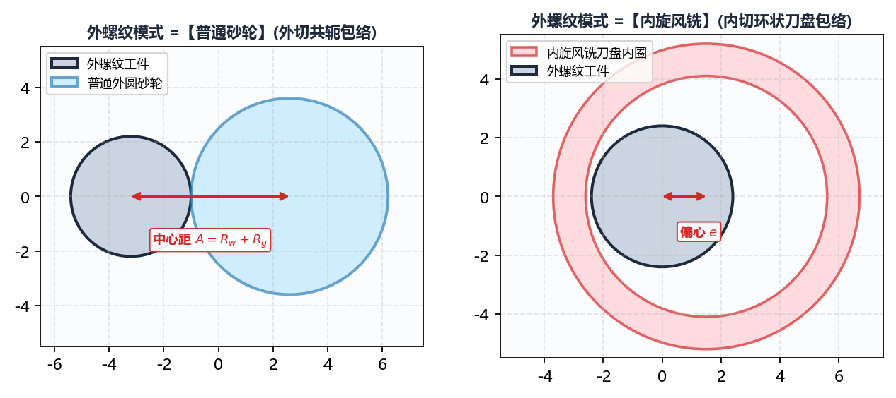
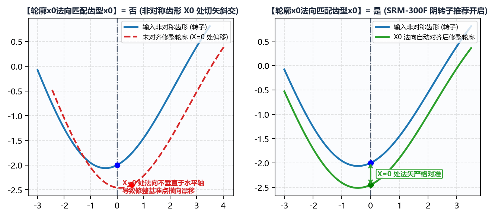

3.2 特殊工艺开关：内旋风铣、转子匹配与程序加密
在 高级参数 -> 初始化配置 下半部分，集成了针对外螺纹旋风铣削、双螺杆压缩机转子基准对齐、以及西门子数控系统知识产权保护的四项核心工艺开关。
一、外螺纹模式（普通砂轮 vs 内旋风铣）
当且仅当 基本参数 -> 工件类型 选择为 外螺纹 时，初始化配置 面板底部会动态显示 外螺纹模式 选项：

外螺纹模式 选项 |
空间啮合拓扑构型 | 典型工艺场景与砂轮/刀盘直径特征 |
|---|---|---|
普通砂轮（默认） |
外啮合（凸对凸）：砂轮位于外螺纹工件外侧，砂轮中心与工件中心位于接触点两侧，中心距 。 | 适用于所有常规外螺纹丝杠磨床、精密蜗杆磨床、螺杆转子成形磨床及花键磨床。 |
内旋风铣 |
内包络外螺纹（凹包凸）：内切式刀盘（或环形内磨头）环抱在外螺纹丝杠外部旋转，刀盘回转半径大于工件外径，中心偏心距 。 | 适用于高效率硬态内旋风铣削（Whirlwind Milling）刀片廓形设计或内切式外螺纹环面磨削。由于刀盘内圆弧与外螺纹同向包络，接触弧显著拉长，必须开启此模式以获得正确的内包络廓形。 |
二、轮廓x0法向匹配齿型x0（螺杆压缩机转子核心开关）
在对称齿形（如标准三角、梯形或双圆弧丝杠）中，齿槽最低点（）的法线天然垂直于水平轴，空间包络前后的 中心位置不会发生漂移。然而，对于双螺杆压缩机阴阳转子（如 SRM-300F、SRM-301M、SRM-160E）等强非对称端面型线，情况截然不同：

轮廓x0法向匹配齿型x0=否（默认，常规螺纹/蜗杆使用）： 直接按导入 DXF 的原始坐标原点进行空间包络投影。对于非对称转子，由于 处切线具有较大倾角，空间包络计算出的砂轮截面最低点（或基准点）会相对于原始齿形 产生显著的水平偏移 与径向偏移，导致机床上难以直接用 对刀。轮廓x0法向匹配齿型x0=是（螺杆转子磨削必开）： 如上图左半部分所示，开启此项后，软件会在三维螺旋面包络求解过程中自动追踪原始 DXF 齿形在 处的空间法矢，并将生成的砂轮修整截面基准点 严格锁死在原始齿形 的法向对应点上。这保证了砂轮修整对刀中心与转子型线设计基准完全重合！
三、法向作为砂轮廓形（否 / 是）
否（默认，标准三维空间包络计算）： 软件完整执行三维螺旋面空间啮合方程求解，精确计算砂轮直径与安装角引起的空间曲率干涉修正量。是（跳过三维干涉修正，直接以法向齿形作为砂轮廓形）： 如上图右半部分所示，当设为是时，系统不再计算由于砂轮有限直径引起的空间包络减薄量，而是直接将工件的法向截面齿形当作砂轮理论截形，仅继续执行后续的齿高延长、齿根倒圆、左右金刚石滚轮圆弧半径补偿与圆弧拟合。- 何时使用：
- 用作对比基准，评估三维空间干涉修正量到底有多大；
- 上游客户给出的 DXF 文件本身就已经是经过修正的砂轮截面图，只需使用 IGD 进行滚轮半径偏置补偿并生成数控修整 G 代码。
- 何时使用：
四、Siemens程序加密（.SPF 自动转 .CPF）
在 拟合误差 右侧，配有一个 Siemens程序加密 复选框（仅在 Windows 操作系统下可用）：
- 未勾选（默认）：当
程序模式选择为西门子模式（模式-0~模式-4、模式-8、模式-100）时，输出程序路径下生成标准可读明文宏程序*.SPF； - 勾选
Siemens程序加密：软件在生成.SPF明文程序后，自动调用内置的西门子程序加密引擎，将其编译加密为不可逆的密文子程序*.CPF，从而保护企业核心修整工艺参数与包络数据不被现场导出泄露。